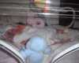

18th August 2001
Poppy was kept off of CPAP for 21 hours and went back on again at 8am this morning. She has slept for most of the day. A routine of Care times that coincide with time off CPAP has been arranged with the nurses in High Care so that Sharon can practice breastfeeding Poppy with less equipment around, but these will probably change as Poppy gets even stronger and can cope with more and more time off.
17th August 2001
Poppy was 10 weeks old today, and it was something of a red letter day for her. This morning Sharon was allowed to give her her first bath and this afternoon she was 'promoted' up to High Care from Intensive Care! This is excellent news and shows just how well she is progressing. The High Care room is much quieter and relaxed than Intensive Care and here she will get into a routine of night and day and breastfeeding, before moving on into Special Care and then home. Her Haemoglobin level in her blood was up today, which means she is producing her own red blood cells. Nevertheless she was given a blood transfusion today to giver her a boost. she has also stopped having caffeine, she she has been having to help her develop. She was being kept off of CPAP for 5 hours this afternoon and then checked, and if she was OK she will be kept off for as long as she can cope. We will see tomorrow how long that was.
16th August 2001
Poppy was taken off CPAP for 7 hours today, and she coped very well. She hasn't had any breast feeds for the last couple of days whilst recovering from her vaccinations; hopefully she will be more alert and interested tomorrow. The level of phosphates in her blood is low at the moment, so she had blood and urine samples taken today. The levels should improve as this is a problem caused by her immature kidneys, which can't store it very well. She is having extra vitamin and mineral supplements given orally.
15th August 2001
Today Poppy weighs 3lb 7oz. She is taking 26ml of milk every two hours and is on CPAP for 6 hours then off for 6 hours. Her platelet level in her blood is a bit low so she may have a blood transfusion.

14th August 2001
Poppy had another quiet day today. She is continuing to have a low oxygen requirement, and is coming off the CPAP for longer periods with no ill effects. She is being weighed tonight.
13th August 2001
Poppy now weighs 3lb 3oz and her milk intake has increased to 24ml every two hours. Her oxygen requirement has reduced as well; she has been at an average of 24 per cent oxygen today and it has gone down as low as 22 per cent (21 percent is normal air). She has had a couple of breast feeds today.
12th August 2001
Poppy had her injections this morning, which made her cry a bit. She has been on between 23% and 25% oxygen all day, which is very good. She came off the CPAP this afternoon for two hours. She continues to improve and everybody is very pleased with her progress.